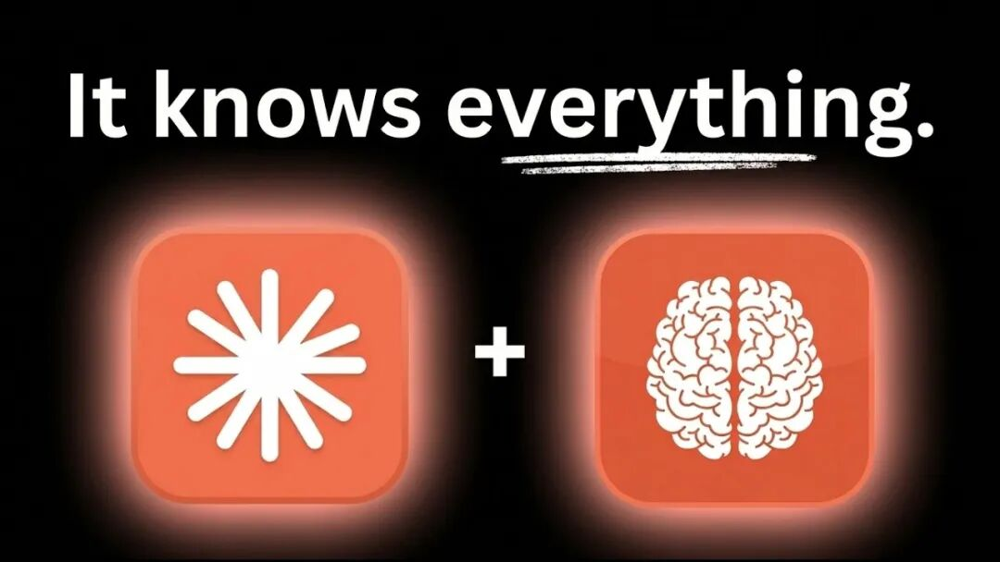
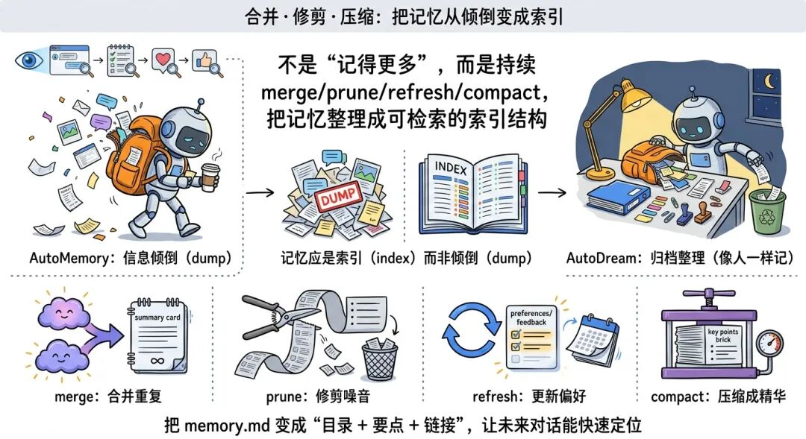
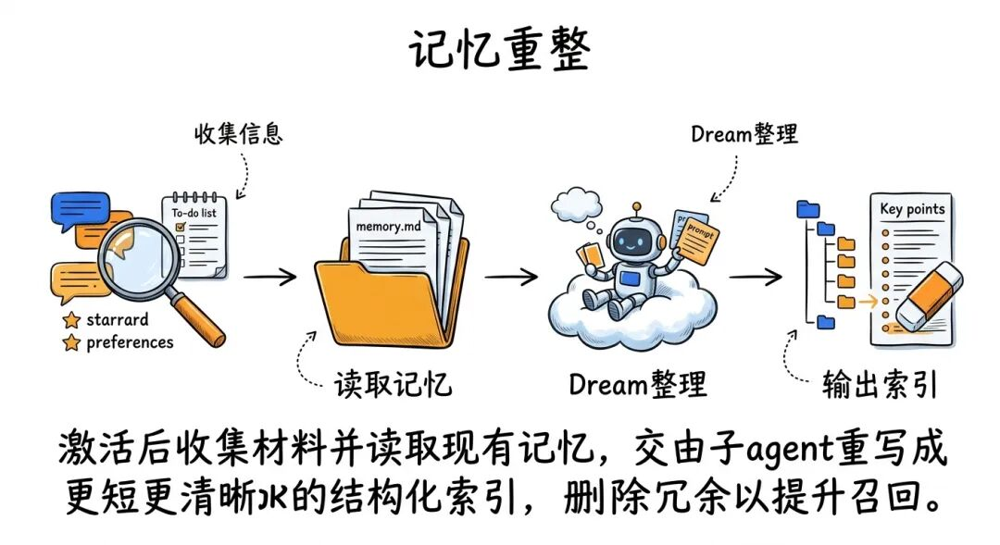
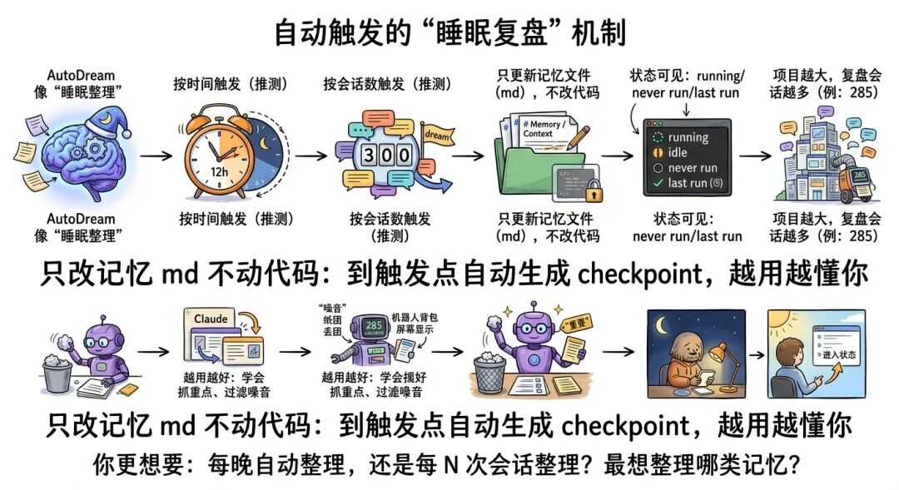

那天晚上我刷到一个视频，标题很平静：Claude Code 刚刚发布了 Memory 2.0。
我本来以为又是“更新了一个小开关”“修了个小 Bug”那种新闻，点开准备两倍速划走。
结果我看到屏幕角落里，Claude Code 的状态栏出现一个词：dreaming。
那一瞬间我脑子里只有一个念头——它不是在工作，它是在“睡觉”。更可怕的是：它睡着的时候，居然在整理我的长期记忆。

如果你也经历过这种崩溃：
写到一半换了会话，第二天打开，AI 像失忆了一样
你反复解释同一套背景、同一条规则、同一种偏好
memory.md 越写越长，越“记得多”，却越难用
那么这次 Anthropic 悄悄放出来的实验功能 AutoDream，可能会让你第一次感到：AI 真的开始像一个“长期搭档”了。
01 它不是新功能，是新物种：AutoDream 到底是什么？
这次的关键词是：AutoDream（自动做梦）。
它不是给你“多记一点”，而是给你一个后台的“整理员”：周期性拉起一个子 agent，回看你的多轮会话，把记忆文件（比如 memory.md 以及相关 md 文件）进行合并、压缩、修剪、刷新，让下一次新会话更清醒、更锐利。
你可以把 AutoMemory 理解成“随手记笔记”：边聊边写，能用，但容易越堆越乱；
而 AutoDream 更像“深度整理”：它不在你聊天时打断你，而是在你看不见的地方把笔记重新编目、去重、删掉废话、留下索引。
视频里作者看到有人用一句话形容它——我看完只觉得后背发凉：这不就是人类睡眠巩固记忆的机制吗？
"This is crazy because it's basically the way that humans store long-term memories through sleep."
"这太疯狂了，因为这基本上就是人类通过睡眠来存储长期记忆的方式。"
— 00:44（视频时间）
这句话有多狠？
它暗示的不是“Claude 更强了”，而是：你和 AI 的协作方式要变了。从“每次重启的临时工”，变成“会自我复盘的长期同事”。
02 我第一次看它“做梦”：dreaming、任务列表、复盘会话数
视频里作者直接在自己的项目里试了 AutoDream。注意：它还是逐步推送、实验性质，不是所有人都有。但一旦有，你会在状态栏看到那个让人恍惚的词：dreaming。
"As you can see, it's dreaming."
"如你所见，它正在做梦（dreaming）。"
— 01:18（视频时间）
更关键的是：它不是“显示个状态装样子”。
作者按下回车查看任务后，能看到 AutoDream 在干嘛——它先设定目标：去最近会话里找更多用户反馈、偏好、与项目相关的信息，然后开始翻看你和它的历史消息、你让它做过的任务、你反复强调过的规则。
"Let me search in recent conversations for more user feedback, preferences, and information relevant to new projects."
"让我在最近的会话中搜索更多用户反馈、偏好以及与新项目相关的信息。"
— 02:06（视频时间）
接着进入整合阶段：它会列出“自上次运行以来发现的关键点”，然后把这些关键点写回你的记忆文件体系中。
视频里那次演示，它大概跑了将近 10 分钟，复盘了十几个会话，同时修改多个 md 记忆文件。
这段画面给我的冲击是：它终于不是“只在当下聪明”。
它在尝试建立一种长期结构：把你真正会用到的东西留下来，把会害你“上下文膨胀”的垃圾扔出去。
03 入口藏得很深：/memory 开关 + /dream 运行（以及“unknown skill”的尴尬）
怎么找到它？作者给了路径：输入 /memory。你会看到一个界面，类似“编辑 Claude 的记忆文件”。里面会显示 AutoDream 是否开启、上次运行时间，以及提示你可以用 /dream 主动运行。
"The way you get into this is you type /memory."
"进入这个界面的方式是输入 /memory。"
— 04:12（视频时间）
第一次打开时，AutoDream 的开关可能是关的。你把光标悬停上去按回车，就能切换为开启。
而 AutoMemory 往往默认开着——它负责把项目相关信息写进 memory 文件，并在会话开始时注入上下文，这也是为什么 Claude Code 比普通对话更“懂项目”。
但注意一个细节：记忆是全局开启的（覆盖多个项目），但 AutoDream 会操作各自项目对应的记忆文件。也就是说：你在 A 项目做梦，整理的是 A 的记忆文件；你在 B 项目做梦，整理的是 B 的文件结构。
更戏剧性的是：在另一个项目里，作者明明看到提示可以 /dream，结果直接输入 /dream——系统回你一句：unknown skill。
你以为它不会跑了？错。你看状态栏，它还是进入了 dreaming。也就是说：前台提示可能混乱，后台已经开工。
"unknown skill"
"未知技能。"
— 06:03（视频时间）
这就很“实验功能”：入口给你了，说明不完善，行为却真实发生。
作者甚至用自然语言硬触发：“运行你的 autodream”。Claude 口头上说没有这个技能，但后台照样开始做梦、做整合。
如果你问我这意味着什么：意味着 AutoDream 的优先级已经进入系统层，只是 UI/指令层还没统一。
04 它究竟在“梦”什么：合并、修剪、压缩，把记忆从“倾倒”变成“索引”

AutoDream 和 AutoMemory 最大的差别，不是“记得更多”，而是“记得更像人”。
AutoMemory 像边走边捡东西：捡到就塞进背包。背包迟早爆炸。
AutoDream 像夜里回到家：把背包倒出来，按类别归档，把没用的小票扔掉，把重要的收据放进文件夹，并写一张目录贴在最上面。
作者用了几个动词总结它在后台做的事：merge、prune、refresh、compact。我建议你把这四个词刻进脑子里，因为这就是“长期协作”的底层能力。
"It's continuously compacting and pruning."
"它在持续对记忆进行压缩（compacting）和修剪（pruning）。"
— 03:28（视频时间）
更关键的一句话是：记忆应该是索引（index），不是信息倾倒（dump）。
也就是说，理想的 memory.md 不该变成“聊天记录第二份”，而应该变成“目录 + 要点 + 链接”，让未来的会话能快速定位。
视频里作者推测了它可能的工作流（不一定是官方实现，但逻辑非常合理）：

1）激活后收集会话信息（扫描最近对话、任务、你的偏好与反馈）
2）读取当前已有的记忆文件（各类 md）
3）把所有材料交给一个子 agent，让它执行“dream prompt”
4）输出结果：把记忆写得更短、更清晰、更结构化，并删除不必要的内容
你看到了吗？这不是“加记忆”，而是“建结构”。
它真正想解决的是：上下文越多不等于越好，越多往往越乱。
05 为什么它可能是拐点：少重复、少膨胀、更好召回——这三刀太狠了
作者说他还没来得及彻底测试“值不值得”，但就目前观察，他认为很值得。理由有三点，我直接翻译成适合我们打工人的版本：
1）更少重复：你不必再一遍遍交代“我是谁、项目是啥、别用什么风格”
就算有 AutoMemory，你仍可能不断补背景、不断纠错。因为笔记会脏、会乱、会过时。 AutoDream 的价值，是让“记忆文件”更像一个干净的项目说明书，而不是越来越长的碎片堆。
2）更少膨胀（bloat）：用 pruning 把 token 赘肉剪掉
很多人以为 AI 需要“更多上下文”。但真实情况是：更好的上下文 ≠ 更长的上下文。 更长只会带来两件事：成本上升、注意力被稀释。
当 AutoDream 在后台持续修剪，你的 memory 文件会更短、更准、更可控。它不是让 AI 记得更杂，而是逼它记得更精。
"Pruning is basically removing unnecessary stuff."
"修剪（pruning）本质上就是删掉不必要的东西。"
— 08:14（视频时间）
3）更好的召回（recall）：删掉不需要的，重要的反而更容易被找到
作者用了一个特别形象的比喻：球池里 100 个球，99 个蓝球，1 个粉球。你要找粉球，最聪明的做法不是再倒进 100 个球，而是先拿走一半蓝球。
这就是信息检索的真相：不是“多”，而是“少而关键”。
当 AutoDream 帮你把“无用的蓝球”清掉，粉球（关键偏好、项目规则、决策记录）自然更醒目。
06 它会怎么自动触发？只改 md 不动代码；越用越像“会复盘的同事”

AutoDream 最迷人的地方，是它像“睡眠机制”：你不用每次都手动整理，到了某个触发点它会自动重置、形成检查点（checkpoint），把零散的东西沉淀成长期可用的结构。
那问题来了：触发器是什么？
作者的判断很谨慎：没有官方文档确认，但结合讨论推测大概率是两类，可能同时存在：
按时间触发：比如每 12 小时做一次 dream
按会话数触发：比如累计到一定会话数（示例：300）做一次 dream
"I don't know the exact implementation."
"我不确定具体实现。"
— 09:46（视频时间）
还有几个你必须知道的注意点，能避免你误会它“偷偷改代码”：
1）它改的是记忆文件（md），不是你的代码、脚本
作者明确提到：它更新了几个文件，都是上下文/记忆文件，不会去动业务逻辑。
2）你会看到几种状态：running / idle / never run / last run
这意味着你能判断它到底有没有在后台做事。
3）项目越大，它会复盘越多会话
视频里第二次演示，作者在大项目里看到它要复盘 285 个会话。你可以想象：这就是“睡一觉整理一遍大脑”。
4）越用越好用
因为它会逐渐学会：哪些信息对你重要，哪些只是噪音。
这句话如果放在传统软件里很普通，但放在“记忆整理”上，就很像一个真正的同事——相处久了，知道你在意什么、讨厌什么。
你看到这里，可能已经开始想象一个画面：
未来你每天只管推进任务，Claude 在夜里帮你把项目记忆整理得更干净；第二天你打开新会话，它不再“模糊”“杂乱”，而是直接进入状态——像一个昨天也在场的人。
所以我特别想问你两个问题（欢迎在评论区直接回）：
1）如果你能选，你希望 AutoDream 更像“每晚自动整理一次”，还是“每完成 N 次会话整理一次”？
2）你最想让它帮你整理的是什么：项目架构、编码风格、需求变更，还是你个人偏好（比如输出格式、沟通方式）？
视频来源：https://www.youtube.com/watch?v=LrgfmZkl3nc
我建了个 AI 交流群，如果你也对 AI 感兴趣，想一起讨论怎么用好各种 AI 工具、怎么搭建自己的 Agent 体系，欢迎加入。这里没有割韭菜，只有一群正在实践的🐮🐎，或者已经开始搞一人创业的小伙伴，我们一起互相分享方法。
⭕️ 请叫我“一点儿” 每天进步一点点❗️如果你也不想只听概念，而是要一步一步把AI玩儿起来，搞副业，或者真正用起来！这个地方，就是我们一起并肩作战的实验场！（但拒绝垃圾！拒绝卖课！）
— ✨ INTJ ｜ 中年失业 🙅
— 互联网大厂离职 ☹️
— 失业不等于失败|AI把自己产品化